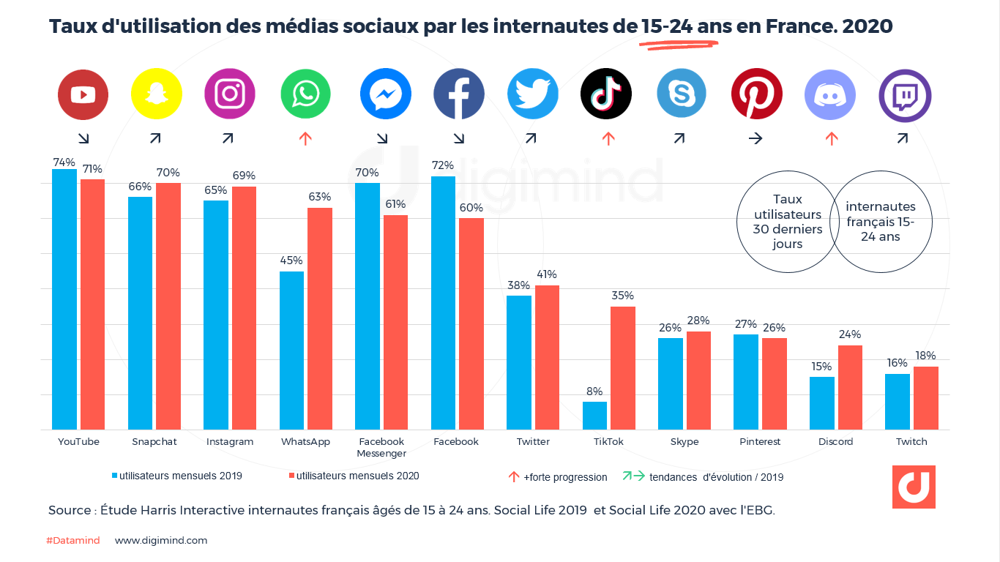

<!DOCTYPE html>
<html lang="fr"> 
	<head>
		<link href="css/style.css" rel="stylesheet">
	<section>
		<h3 id="quatriemepartie">4)Exemples de réseaux sociaux et statistiques</h3>
		<p><h4>Facebook:</h4> réseau social pour partager des photos et vidéos. Mondial: 2,70 milliards d'utilisateurs par mois, France: 46?9 millions d'utlisateurs par mois<br><h4>Youtube:</h4> réseau social permettant de partager des vidéos et qu'une communauté puisse les regarder. Mondial: +2 milliards d'utlisateurs, France: 45,3 millions d'utilisateurs par mois<br><h4>Twitter:</h4> réseau social permettant d'échnger des photos de manière rapide et que tout le monde peut voir. Mondial: 326 millions d'utilisateurs, france: 16,7 millions d'utilisateurs par mois.<br><h4>Linkedin:</h4> réseau social pour une recherche d'emploi ou un recrutement. Mondial: 310 millions d'utilisateurs, France: 16,8 millions d'utilisateurs par mois. <br><h4>Instagram:</h4> réseau social des jeunes de nos jours, utilisé pour partager des photos et vidéos et échanger entre ami. Mondial: 1,083 milliard d'utilisateur, France: 28 millions d'utilisateurs par mois. <br><h4>Pinterest:</h4> réseau social permettant de trouver de l'inspiration en recherchant quelque chose; Mondial: 416 millions d'utilisateurs, France: 13 millions d'utilisateurs par mois.<br><h4>Tiktok:</h4> réseau social permettant de publier des vidéos humoristiques, de danse etc et qui sont visible par tous, ses abonnés ou juste soi. Mondial: 800 millions d'utilisateurs.<br><h4>Snapchat:</h4> réseau social permettant d'échanger entre amis ou connaissances et toutes les photos ou vidéos envoyées ne sont visible que dans la durée de 24H. Mondial: 397 millions d'utilisateurs, France: 19,3 millions d'utilisateurs par mois.<br><h4>WhatsApp:</h4> réseau social permettant d'échanger à travers le monde sans avoir à payer un cout supplémentaire pour un autre pays. Mondial: +2 milliards d'utilisateurs, France: 24?4 millions d'utilisateurs par mois.<br><h4>Messenger:</h4> réseau social appartenant à Facebook permettant de discuter pour le travail ou entre amis. Mondial:+ 1,3 milliard d'utilisateurs.<br><h4>Skype:</h4> réseau social permettant de faire des facetime ou appel à travers le monde à partir d'un ordinateur lu téléphone avec un nombre illimité de convives. Mondial: 300 milliers d'utilisateurs.</p>
		
	</section>
